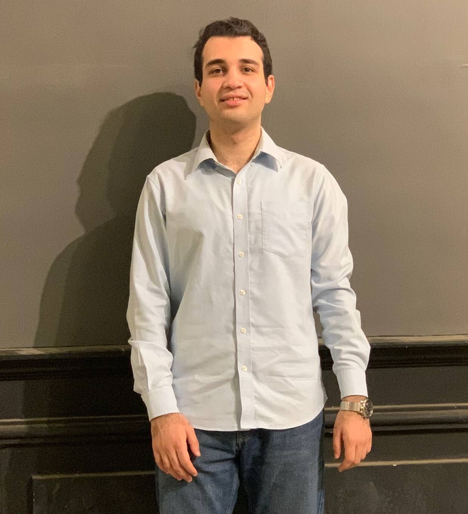

01
AEGIS
AI-powered Android security platform with device risk scoring, APK analysis, local PDF RAG, live web search and an analyst-focused React/FastAPI experience.
FastAPIReactDockerOllamaRAGMITRE
01 INITIALIZING PORTFOLIO RUNTIME
02 LOADING RESEARCH + SYSTEMS
03 CHECKING EVIDENCE GRAPH
04 STARTING INTERACTIVE LAYER
I’m Ahmed Hussein — a Data Science graduate building end-to-end systems across RAG, LLMs, multi-agent AI, computer vision, OCR, digital forensics, analytics and cybersecurity.

00 / OPERATING PRINCIPLE
“A good AI demo gives an answer.
A good AI system can show you why.”
That idea runs through my work: provenance, validation, guardrails, retrieval, observability, deterministic checks, and interfaces built for review.
01 / SELECTED SYSTEMS
Click any system to enter its case study. Each one is framed around the problem, engineering architecture, reliability choices and the actual build.
AI-powered Android security platform with device risk scoring, APK analysis, local PDF RAG, live web search and an analyst-focused React/FastAPI experience.
Guarded LangGraph architecture with routing, memory, MASVS knowledge, Qdrant RAG, cache, optional web search and LangSmith observability.
Forensic workstation for image and PDF evidence with Arabic-English OCR, metadata/ELA inspection, SHA-256 integrity, duplicate detection and bounded local-LLM summaries.
Threat-hunting workflow for logs, PCAP, EVTX and APK evidence with local Llama 3, RAG, MITRE ATT&CK mapping and security report generation.
02 / RESEARCH
At Compumacy, I contributed to ArabicPsychBench — an Arabic psychiatry benchmark designed for LLM evaluation and research-paper preparation.
Python/OCR preprocessing and task-planning pipelines mapped source material to Mental QA, Diagnosis, Treatment, Clinical Approach, Classification, Treatment Follow-Up and Sequential QA.
03 / PROJECT ARCHIVE
Filter the archive, then open the public repository directly.
04 / CAPABILITIES
My strongest work sits between model engineering, data quality, backend systems, retrieval and interfaces.
05 / ABOUT
Data Science graduate from the Faculty of Artificial Intelligence, Menofia University. GPA 3.67, overall grade Excellent with Honors, ranked 3rd in the Data Science Department across Years 2, 3 and 4.
I’m most interested in applied research and products where reliability, evidence, evaluation and user-facing clarity matter as much as model performance.
06 / NEXT